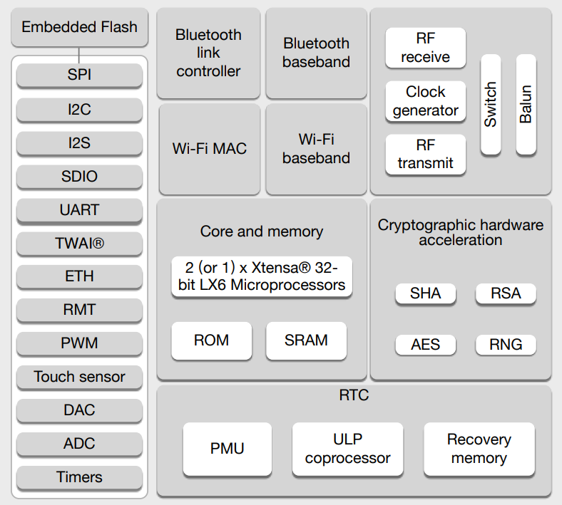
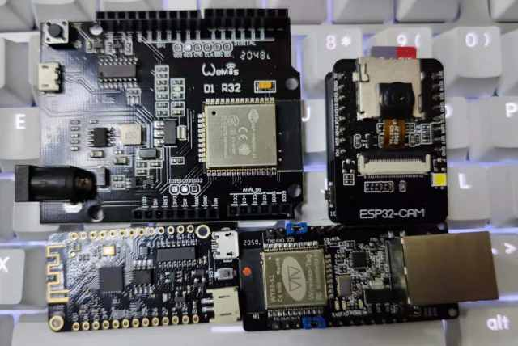

ESP32¶
GitHub : Xtensa LX6 Dual Core 240MHz Wi-Fi BLE4.2 TWAI Ethernet MAC100 QFN48
Xin简介¶
EEMBC: 660.7 CoreMark (160 x 4.13CoreMark/MHz)
规格参数¶
基本参数¶
特征参数¶
模拟性能¶
12-bit SAR ADC 18ch
2 x 8-bit DAC
芯片架构¶
功耗参数¶
电压范围：2.3 to 3.6 V
功耗范围：
v4.0.1 |
单核 |
双核 |
单核(none) |
双核(none) |
uA/MHz |
|---|---|---|---|---|---|
160MHz |
38.5mA |
54.8mA |
25.3mA |
27.8mA |
|
240MHz |
57.4mA |
85.3mA |
33.8mA |
38.5mA |
|
uA/MHz |
240 |
350 |
148 |
165 |
ULP¶
FSM
Note
每个GPIO的绝对最大电流为40mA
连接能力¶
Wi-Fi¶
802.11b/g/n 22dBm 150Mbps HT40
芯片支持 TCP/IP 协议，完全遵循 802.11 b/g/n Wi-Fi MAC 协议栈，支持分布式控制功能 (DCF) 下的基本服务集 (BSS) STA 和 SoftAP 操作。
1T1R 数据率高达 150 Mbps
802.11b 无线传输功率可达 +20.5 dBm
802.11n 无线传输功率可达 +18 dBm
802.11 n MCS0-7 支持 20 MHz 和 40 MHz 带宽
802.11 n MCS32 (RX)
802.11 n 0.4 µs 保护间隔
接收 STBC 2×1
Bluetooth¶
v4.2 BR/EDR
芯片集成了蓝牙链路控制器和蓝牙基带，支持基带协议和其他底层链路协议，例如调制/解调、包处理、比特流处理和跳频等。芯片的蓝牙协议栈支持蓝牙 v4.2 BR/EDR 和 Bluetooth LE 标准。
Class-1、Class-2 和 Class-3 发射输出功率，动态控制范围高达 21 dB
NZIF 接收器灵敏度高，最小灵敏度达 -94 dBm
提供 UART HCI 接口，速度高达 4 Mbps
提供 SDIO/SPI HCI 接口
提供 PCM/I2S 音频接口
传统蓝牙和低功耗蓝牙的差异：
1、低功耗蓝牙的发送和接受任务会以最快的速度完成，完成之后蓝牙Bluetooth LE会暂停发射无线（但是还是会接受），等待下一次连接再激活；传统蓝牙是持续保持连接。
2、低功耗蓝牙的广播信道（为保证网络不互相干扰而划分）仅有3个；传统蓝牙是32个。
3、低功耗蓝牙“完成”一次连接(即扫描其它设备、建立链路、发送数据、认证和适当地结束)只需3ms；传统蓝牙完成相同的连接周期需要数百毫秒。
4、低功耗蓝牙使用非常短的数据包，多应用于实时性要求比较高，但是数据速率比较低的产品，遥控类的如键盘，遥控鼠标，传感设备的数据发送，如心跳带，血压计，温度传感器等；传统蓝牙使用的数据包长度较长，可用于数据量比较大的传输，如语音，音乐，较高数据量传输等。
5、低功耗蓝牙无功率级别，一般发送功率在+4dBm，一般在空旷距离，达到70m的传输距离；传统蓝牙有3个功率级别，Class1，Class2，Class3，分别支持100m，10m，1m的传输距离。
CAN¶
11898-1 1Mbit/s
ETH¶
MAC 100Mbps
Xin选择¶
品牌对比¶
在WiFi MCU领域，ESP的主要对比品牌有 Realtek 和 MediaTek
SRAM/ROM |
Characteristics |
UART/SPI/SDIO |
|||
|---|---|---|---|---|---|
994.26 |
512KB/384KB |
3/2/1 |
|||
288KB/2MB |
16-bit ADC |
6/2/1 |
QFN56 |
型号对比¶
SRAM/ROM |
WiFi |
BLE |
USB |
||||
|---|---|---|---|---|---|---|---|
994.26 |
520KB/448KB |
b/g/n |
BLE v4.2 |
X |
QFN48 |
||
613.8 |
320KB/128KB |
b/g/n |
BLE v5.0 |
1.1 OTG |
QFN56 |
||
1181.6 |
512KB/384KB |
b/g/n |
BLE v5.0 |
1.1 OTG |
QFN56 |
||
407.22 |
400KB/384KB |
√ |
v5.0 |
X |
QFN32/QFN28 |
ESP8266¶
EEMBC CoreMark:191 (80 x 2.38 CoreMark/MHz)
支持2.4GHz HT20、带宽75Mbps
主频160MHz、160KB SRAM、QFN32(5*5)
软件支持TCP/IP、MQTT、HTTP、COAP等常见协议，支持AT指令，支持OTA升级
就发布时间而言，ESP32是ESP8266继任者，增加了CPU核数量，更快的Wi-Fi，更多的GPIO，并支持蓝牙4.2和蓝牙低功耗。ESP32相较ESP8266还多了蓝牙功能。
此外，ESP32配有触摸感应针脚，可用于唤醒ESP32深度睡眠，内置霍尔效应传感器和内置温度传感器。
ESP8266发布较早拥有更多生态资源，同时开发灵活度更高，开发者接受度很高，同时由于定价更低，在没有足够替换动力下，很多项目继续使用该芯片。
ESP8266方案缺陷：
eFUSE不开放
RF信号质量不够高
DTIM保活功耗较高
内存较小，无法支撑复杂的应用场合
缺少硬件加密、没有安全启动和Flash加密，RSA耗时较长，TLS握手需要3-4秒
版本对比¶

双核、高主频240MHz、内存容量达520 KB SRAM、eFUSE可用、支持外接PSRAM、QFN48(5*5)
支持2.4GHz HT20/40、带宽150Mbps
支持蓝牙双模、支持蓝牙与WiFi共存机制
支持硬件加密，包括安全启动和Flash加密
外设硬件支持，包括硬件PWM、红外、以太网口、显示屏、音频采集/播放、视频采集/传输、支持更多的低功耗模式
软件支持TCP/IP、MQTT、HTTP、COAP等常见协议，支持AT指令，支持OTA升级，支持语音识别、人脸识别，支持WiFi+BLE MESH组网
双核产品在性能上同比单核SL没有较为明显的提高（一些芯片厂商也专门对乐鑫的双核方案进行过评估，但最终仍选用单核方案）
Xin应用¶
硬件平台¶
开发工具¶
源圈OS-Q通过先验证的方式，集成了更多可信赖资源 PlatformIO ESP32 可以作为一个启动模板，作为一个开源编译体系便于多系统下开发。
协处理的开发，使用汇编语言，需要单独的工具链，通过官方提供提供的IDF工具实现。
Xin总结¶
能力构建¶
要点提示¶
ESP32的Touch功能灵敏度不够
烧录模式¶
因为esp32芯片进入烧写模式的条件是启动时检测boot引脚，因此需要摁着boot键才能下载程序。出现这种情况一般是启动配置的strapping引脚采样电平不符合启动模式，需要调整硬件电路。
串口权限¶
linux下面串口设备的一般是root权限，因此使用串口需要取得root权限或者修改dev目录下串口的权限。想串口支持当前用户，需要把当前用户添加到Group
” sudo usermode -a -G dialout $USER “
问题整理¶
Brownout detector was triggered 已触发断电探测器
原因在于: ESP32的电平低于某个值（这个值是可以设定的），然后触发了断电探测器，断电探测器会使得ESP32重新启动。
解决：换个电源，要不就是ESP32板子设计本身有问题，最终的大招，禁用断电探测器
make menuconfig->component config->ESP32-specific->Hardware brownout detect &reset禁用掉这个选项，将不再检测电平。或者也可在再这个选项的下面选择一个更合适的保护电平。
这个问题描述的是：ESP32的电平低于某个值（这个值是可以设定的，后文会有介绍），然后触发了断电探测器，断电探测器会使得ESP32重新启动。
Warning
ESP32最大的槽点就是编译效率，因为组件特别多，每次编译都非常耗时间